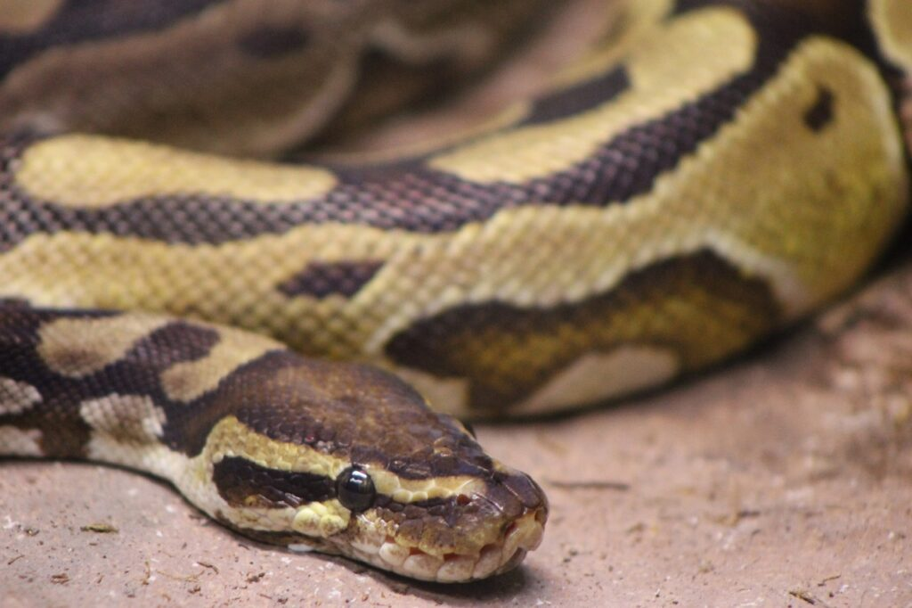

Curriculum Vitae
Nombre:
Diego Sota Rebollo
Sobre mi:
Estudiante GISAM URJC. Musico. Programador. Mientras todo vaya bien, trabajo duro. Si las cosas salen
mal, me
recupero.

Formación:
- MATLAB
-
MATLAB OnRamp
-
MATLAB Fundamentals
-
MATLAB OOP OnRamp
-
MATLAB App Building OnRamp
-
MATLAB Signal Processing OnRamp
-
MATLAB Introduction to Symbolic Math
-
MATLAB Optimization OnRamp
- Experiencia en el tratamiento de señales con Matlab
- Experiencia en el procesamiento de imagen wn Matlab
- Pascal Básico
- Python:
- Lenguaje Elemental.
- programación Funcional.
- Programación Orientada a Objetos.
- Programación Asincrona con hilos y corrutinas.
- Experiencia con sockets y asyncio creando servidores TCP/UDP.
- Experiencia con bases de datos.
- Experiencia con servidores webRTC
- Experiencia con numpy, sklearn, librosa, aiohttp y otras librerías de terceros.
- Swift:
- Lenguaje Elemental
- Programación Orientada a Objetos.
- Programación Asincrona básica con funciones asíncronas.
- Frontend:
- HTML Básico
- Experiencia creando entornos AR/VR con Aframe
- WebGL
- Javascript Básico
- WebRTC en Javascript
- CSS Elemental
- Ingeniería de Redes:
- Conocimiento general de la arquitectura TCP/IP
- Protocolos avanzados BGP y OSPF
- Protocolos orientados a Streaming RTP, SDP, SIP...
- Conocimientos de seguridad informñatica y calidad de servicio
- Experiencia realizando conexiones tcp/http cliente-servidor con python y JavaScript
- Experiencia realizando conexiones udp/text cliente-servidor con python
- Experiencia realizando conexiones WebRTC peer2peer con python y JavaScript
Experiencia laboral:
- Profesor ocasional de Matemáticas de Bachillerato.
- Profesor particular de Matemáticas de 4º de primaria en 2021 durante 6 meses, 2 horas por semana.
- Profesor ocasional de guitarra.
Experiencia académica:
- Cursado Bachillerato en modalidad de Ciencias Puras.
- Cursando tercero de GISAM en la URJC con los 2 primeros cursos completados.
Idiomas:
Habilidades:
- Guitarra Clásica, Acústica y Eléctrica intermedio
- Conocimientos avanzados de Teoría Musical y Armonía Moderna.
- Experiencia en el manejo de programas de edición de audio como Audacity, Reaper...
- Piano principiante y básico
- Permiso B de conducir
SECRETO: